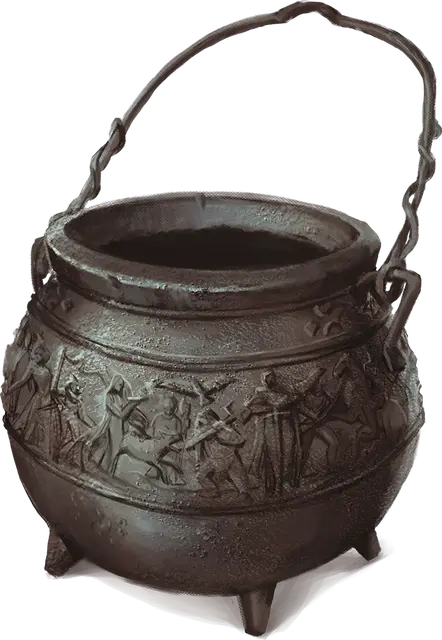

Котёл перерождения
Cauldron of Rebirth
Чудесный предмет, очень редкий (требуется настройка Друидом или Колдуном)

Рекомендованная стоимость 40 000 ЗМ
Чугунные бока этого Крошечного котла украшены рельефными изображениями героев.
Вы можете использовать этот котёл как Заклинательную фокусировку для ваших заклинаний, а также как подходящий Материальный компонент для заклинания Наблюдение.
Варка зелий. При завершении Долгого отдыха вы можете использовать котёл для создания Зелья большого лечения, что занимает 1 минуту. Зелье сохраняет свою магию в течение 24 часов, после чего теряет силу, если не употреблено.
Оживление. Действием Магия вы можете заставить котёл увеличиться до достаточных размеров, чтобы в него могло сидя поместиться существо Среднего размера. Вы можете вернуть котёл к обычному размеру действием Магия, при этом всё, что не сможет поместиться внутри, будет безопасно перемещено в ближайшее незанятое пространство.
Если вы поместите тело Гуманоида в котёл и накроете его 200 фунтами соли (они стоят 10 ЗМ), оставив на 8 часов и более, соль будет израсходована, и существо оживёт на следующем рассвете, как если бы было воскрешено заклинанием Оживление. Как только это свойство использовано, его нельзя использовать снова в течение следующих 7 дней.